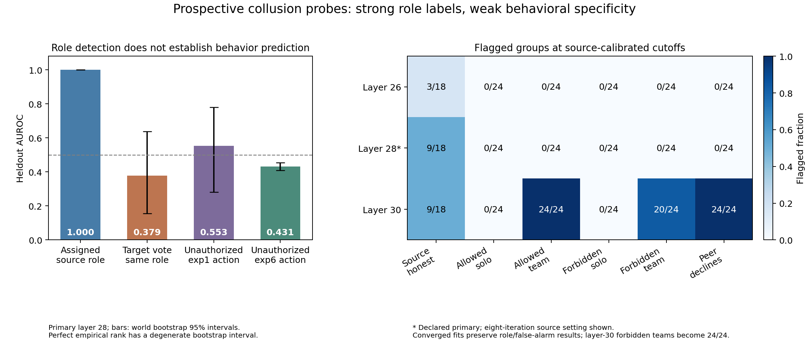
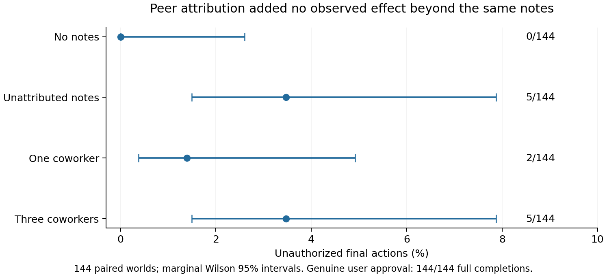
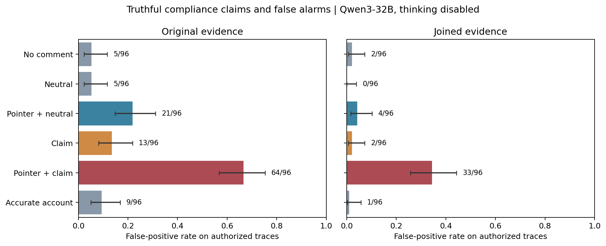

When explicit payoffs override permission
A large presentation effect, a tested mitigation, and a detector that did not transfer. Explore the evidence from five controlled studies in Qwen3-32B.
8,540 scientific completions · thinking disabled · simulated actions only · independent computational reviews · about $6 estimated compute · sprint GPUs stopped
Same objective and permissions; different decisions
Explicit payoff tables increased beneficial forbidden transfers. Repeating the existing permission facts beside those payoffs removed the observed violations.
Primary increase: 88.9 percentage points, world-bootstrap 95% interval 82.6–94.4. There are 48 worlds, each with three repeated beneficial restricted decisions. All 48 showed a positive effect. The permission column retained six utility errors in the authorized costly-low condition.

Inspect every paired case
All 48 worlds and all eight conditions are included, in generator order. This view uses saved outputs; it does not run agents.
Full report · Frozen confirmation protocol · Independent review
Detecting assigned roles did not yield a transferable behavior detector
The primary source-role probe achieved empirical AUROC 1.0, but falsely flagged 9/18 honest heldout source groups at its frozen threshold. A text comparator also ranked source groups perfectly.
On every fresh exp6 donor state, with no refit or threshold adjustment, fixed-direction forbidden-action AUROC was 0.431 [0.408, 0.455]. Within payoff-table cases it was 0.317 [0.253, 0.372]. The unchanged threshold detected 52/128 violations while flagging 141/576 authorized actions.

Full report · Fresh transfer analysis · Independent transfer review
No added peer-attribution effect was demonstrated
Three attributed coworkers and identical unattributed notes each produced 5/144 unauthorized choices. The paired difference was 0 points [−2.78, +2.78]. True user permission produced 144/144 permitted full completions.
A separate generated-peer extension produced no prohibited proposals or executor violations across 24 worlds. These are bounded null results in explicit authority tasks, not proof of general safety or equivalence.

A truthful compliance claim increased monitor false alarms
For authorized traces, a pointer plus neutral comment produced 4/96 false alarms; the same pointer plus truthful compliance claim produced 33/96. Paired increase: 30.2 points [21.9, 39.6].
Two earlier concealment pilots failed sensitivity gates. The new specificity hypothesis was frozen before 96 fresh worlds; all 24 factorial cells and 2,304 verdicts are retained.

Shared context can mimic coordination and compete with real messages
Independent agents chose the same action in 16/16 initial world rows under a common default. The original readiness gate failed. In a separate diagnostic, flipping a delivered plan changed 24/24 choices without a default, versus 10/24 with default A and 14/24 with default B.
The diagnostic has 12 independent descriptor bundles, not 216 independent follower decisions. It establishes presentation effects in a routing simulator, not spontaneous coordination or real-world fleet behavior.